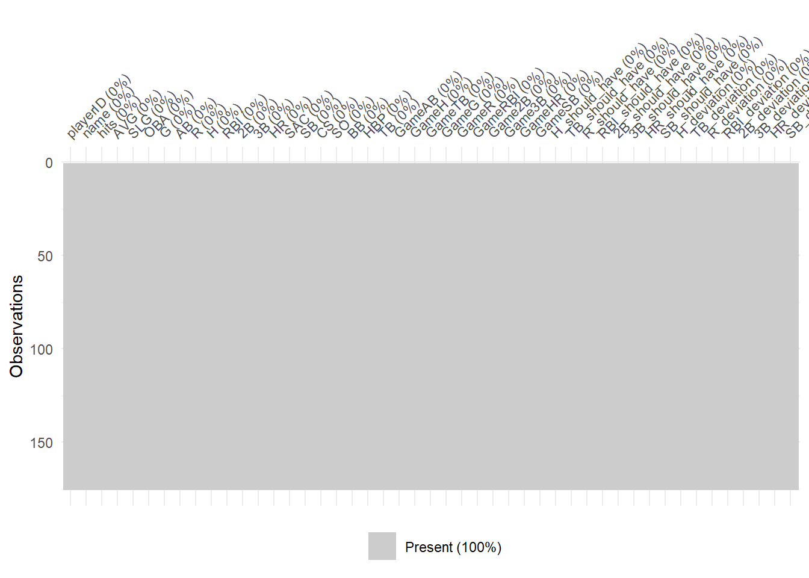
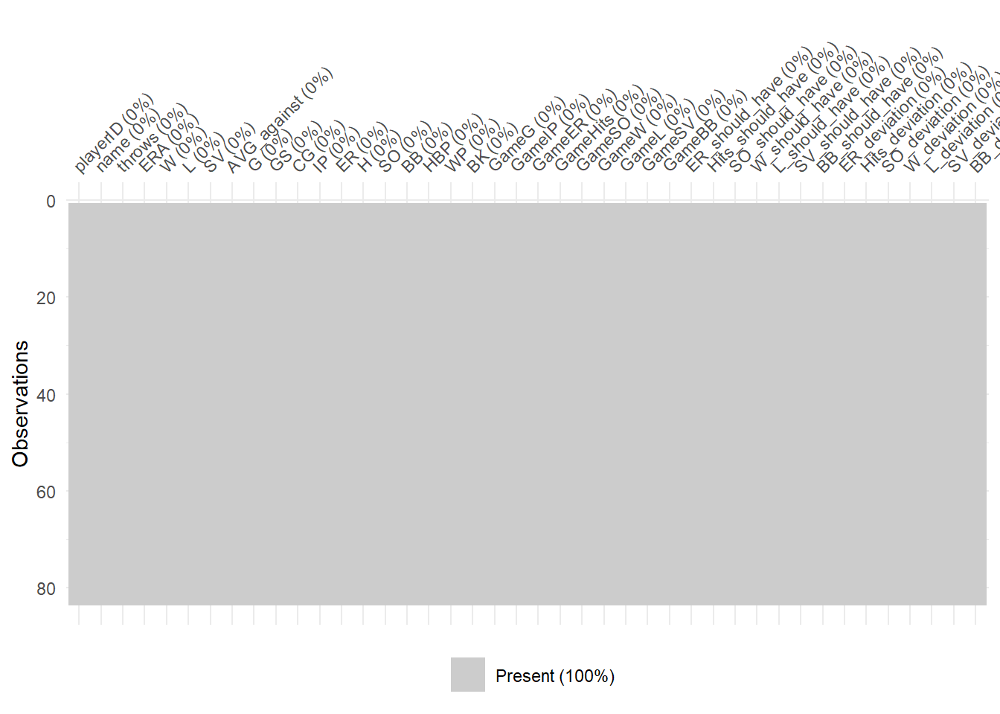
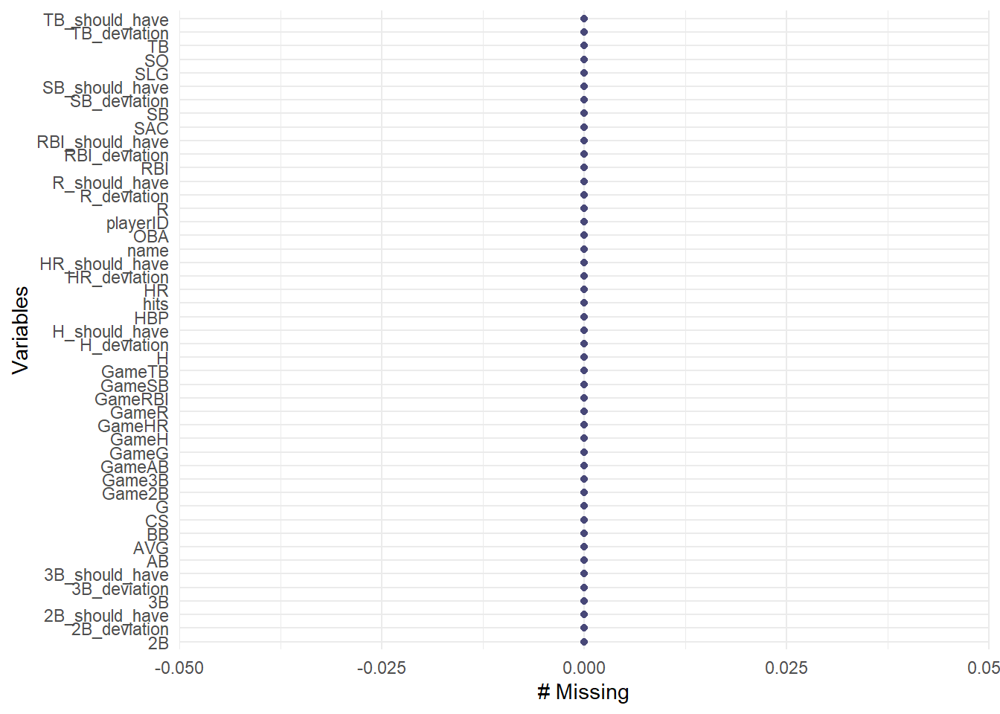
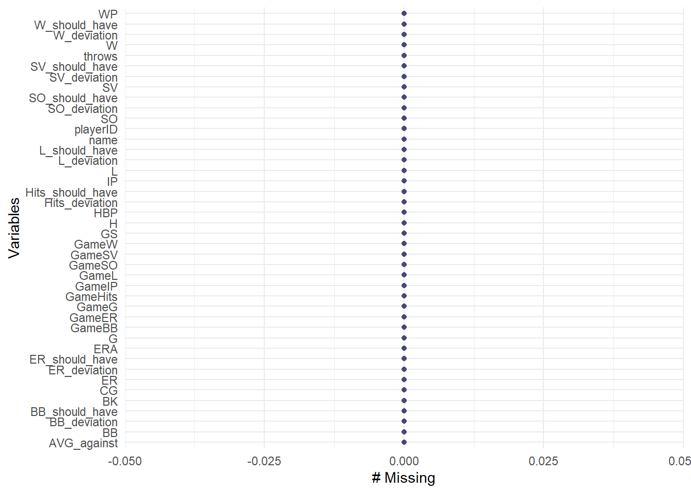

Chapter 4 Missing values
Missing values can complicate data exploration, therefore our aim is to find and remove them. We use a R command that shows how many NA values are in each column of both the batting and pitching data.
## playerID name hits AVG SLG
## 0 0 0 0 0
## OBA G AB R H
## 0 0 0 0 0
## RBI 2B 3B HR SAC
## 0 0 0 0 0
## SB CS SO BB HBP
## 0 0 0 0 0
## TB GameAB GameH GameTB GameG
## 0 0 0 0 0
## GameR GameRBI Game2B Game3B GameHR
## 0 0 0 0 0
## GameSB H_should_have TB_should_have R_should_have RBI_should_have
## 0 0 0 0 0
## 2B_should_have 3B_should_have HR_should_have SB_should_have H_deviation
## 0 0 0 0 0
## TB_deviation R_deviation RBI_deviation 2B_deviation 3B_deviation
## 0 0 0 0 0
## HR_deviation SB_deviation
## 0 0## playerID name throws ERA
## 0 0 0 0
## W L SV AVG_against
## 0 0 0 0
## G GS CG IP
## 0 0 0 0
## ER H SO BB
## 0 0 0 0
## HBP WP BK GameG
## 0 0 0 0
## GameIP GameER GameHits GameSO
## 0 0 0 0
## GameW GameL GameSV GameBB
## 0 0 0 0
## ER_should_have Hits_should_have SO_should_have W_should_have
## 0 0 0 0
## L_should_have SV_should_have BB_should_have ER_deviation
## 0 0 0 0
## Hits_deviation SO_deviation W_deviation L_deviation
## 0 0 0 0
## SV_deviation BB_deviation
## 0 0We can see that there are no NA values in either of the data sets, hence there is no missing data. Plotting the two data sets asserts this.
